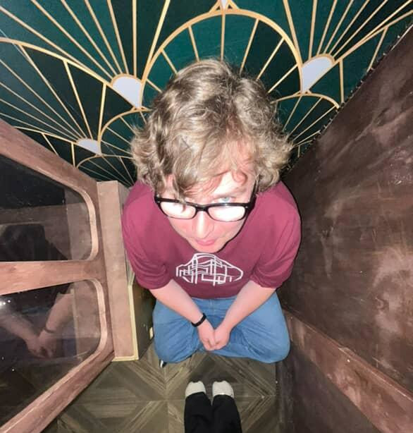

Chandler McKay Sparkman | WDD 130
Hi! My name is Chandler Sparkman. I live in Germantown, Tennessee and work at Memphis Escape Rooms. I
like to
play video games, DND, and code! My favorite movie is Scott Pilgrim V.S. the World, my favorite
podcast is The Adventure Zone by the McElroy Family, and my favorite games kind fluctuate, but
the
common suspects are Mario and Luigi: Bowser's Inside Story, Terraria, and Bioshock.
Terraria is actually the reason I got into coding. I didn't have a computer as a kid, so
I
was
mainly
playing on my phone. I ended up getting a tad lazy, and straight up taught myself how to hex-edit in
order
to edit my inventory and give myself all the most power items. Seeing the inner workings of this game I
loved so much was FASCINATING.